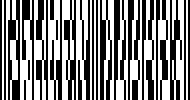
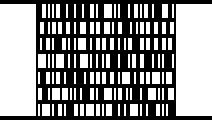
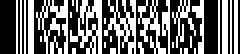
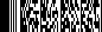
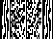
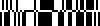
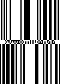
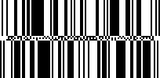
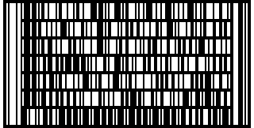

|
Zint Barcode Generator |
||
|---|---|---|
An early innovation to get more information into a symbol, used primarily in the vehicle industry, is to simply stack one-dimensional codes on top of each other. This can be achieved at the command prompt by giving more than one set of input data. For example
zint -d 'This' -d 'That'
will draw two Code 128 symbols, one on top of the other. The same result can be achieved using the API by executing the ZBarcode_Encode() function more than once on a symbol. For example:
my_symbol->symbology
= BARCODE_CODE128;
error = ZBarcode_Encode(my_symbol,
"This");
error = ZBarcode_Encode(my_symbol,
"That");
error = ZBarcode_Print(my_symbol);
The example below shows 5 EAN-13 symbols stacked in this way.

A more sophisticated method is to use some type of line indexing which indicates to the barcode reader which order the symbols should be read. This is demonstrated by Code 16k which uses a Code128 based system which can stack up to 16 rows in a block. This gives a maximum data capacity of 77 characters or 154 numerical digits and includes two modulo-107 check digits. Code 16k also supports extended ASCII character encoding in the same manner as Code 128.

Heavily used in the parcel industry, the PDF417 symbology can encode a vast amount of data into a small space. Zint supports encoding up to the ISO standard maximum symbol size of 925 codewords which (at error correction level 0) allows a maximum data size of 1850 text characters, or 2710 digits. The width of the generated PDF417 symbol can be specified at the command line using the --cols switch followed by a number between 1 and 30, and the amount of check digit information can be specified by using the --security switch followed by a number between 0 and 8 where the number of codewords used for check information is determined by 2(value + 1). If using the API these values are assigned to option_2 and option_1 respectively. The default level of check information is determined by the amount of data being encoded. International text support is provided using the Latin-1 character set as described in Appendix A. A separate symbology ID can be used to encode Health Industry Barcode (HIBC) data which adds a leading '+' character and a modulo-49 check digit to the encoded data.

Also known as truncated PDF417. Options are as for PDF417 above.

A variation of the PDF417 standard, MicroPDF417 is intended for applications where symbol size needs to be kept to a minimum. 34 pre-defined symbol sizes are available with 1 - 4 columns and 4 - 44 rows. The maximum size MicroPDF417 symbol can hold 250 alphanumeric characters or 366 digits. The amount of error correction used is dependant on symbol size. The number of columns used can be determined using the --cols switch or option_2 as with PDF417. A separate symbology ID can be used to encode Health Industry Barcode (HIBC) data which adds a leading '+' character and a modulo-49 check digit to the encoded data.

5.2.6 GS1 DataBar-14 Stacked (ISO 24724)
A stacked variation of the GS1 DataBar-14 symbol requiring the same input (see section 5.1.12.1). The height of this symbol is fixed. The data is encoded in two rows of bars with a central finder pattern. This symbol can be generated with a two-dimensional component to make a composite symbol.

5.2.7 GS1 DataBar-14 Stacked Omnidirectional (ISO 24724)
Another variation of the GS1 DataBar-14 symbol requiring the same input (see section 5.1.12.1). The data is encoded in two rows of bars with a central finder pattern. This symbol can be generated with a two-dimensional component to make a composite symbol.

5.2.8 GS1 DataBar Expanded Stacked (ISO 24724)
A stacked variation of the GS1 DataBar Expanded symbol for smaller packages. Input is the same as for GS1 DataBar Expanded (see section 5.1.12.3). In addition the width of the symbol can be altered using the --cols switch or option_2. In this case the number of columns relates to the number of character pairs on each row of the symbol. For symbols with a 2D component the number of columns must be at least 2. This symbol can be generated with a two-dimensional component to make a composite symbol.

Based on Code 128 the Codablock-F symbol supports extended ASCII characters in the Latin-1 codeset and features the ability to scan and reconstruct the stacked symbol using a standard 1D barcode reader. A separate symbology ID can be used to encode Health Industry Barcode (HIBC) data which adds a leading '+' character and a modulo-49 check digit to the encoded data.

|
One-Dimensional Symbols |
|
Composite Symbols |